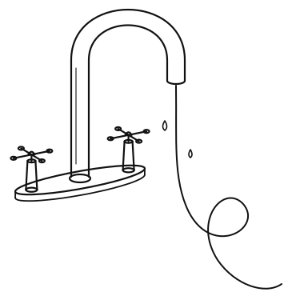

Soy Nico
Creo en tomar partido, en ser opinionado, en arriesgar y hacerte cargo de tu propia vida. Veo a la tecnología como una forma de expresión artística. Sigo a los movimientos del Software Malleable y Local-First, ayudo a las personas a crear su propio software. Interesado en soberanía tecnológica, política y open source.
Escribo todo el tiempo, a veces va a algunos de estos dos lugares
